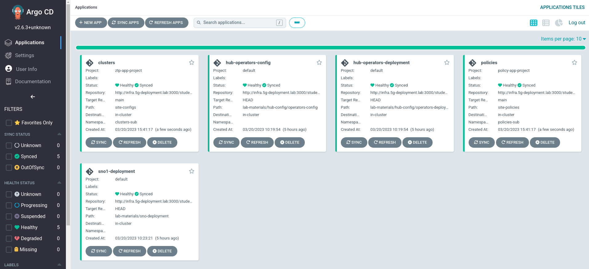
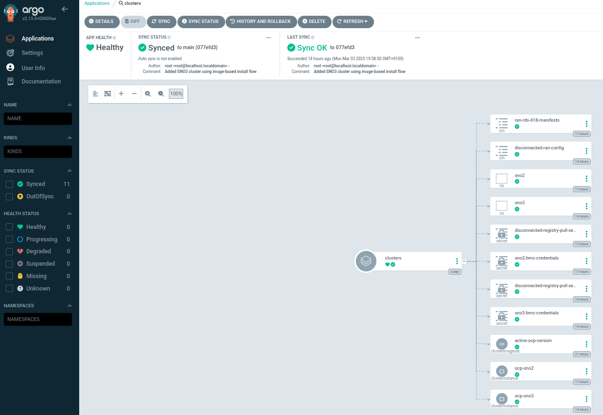
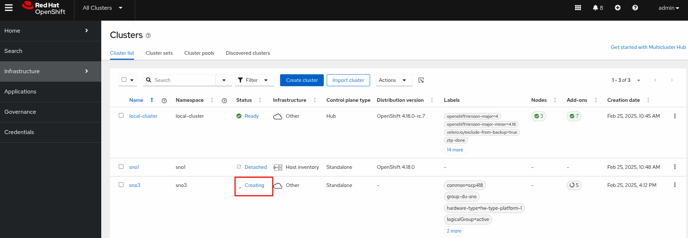
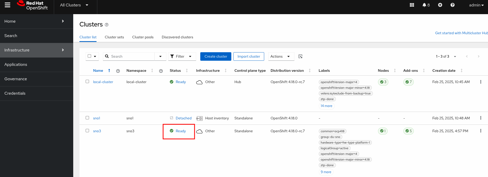
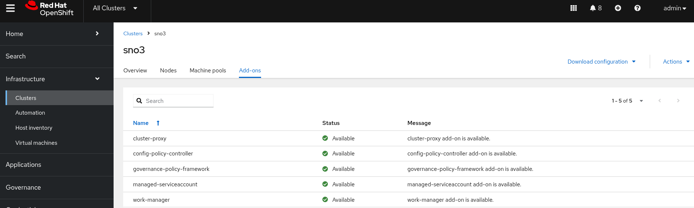

Deploying an Image Based Install Cluster
Introduction
In the previous section, Creating the Seed Image, we created a seed image of a Single Node OpenShift cluster, version v4.18.3. This seed image will be used to deploy a new SNO in under 20 minutes. This is why, especially in Telco RAN environments where we manage thousands of clusters, this deployment method is preferred.
The following diagram illustrates the process we’ll follow to deploy and configure the sno-ibi OpenShift clusters with the RAN DU profile:

-
A seed image has already been created and stored in our container registry.
-
The appropriate RHCOS images are available on a HTTP server deployed in the infrastructure server.
-
The ImageBasedInstallationConfig CR is provided and will be used by the
openshift-installbinary to create the installation ISO. -
The installation ISO is remotely mounted to the sno-ibi, and the preinstallation process begins.
Once preinstallation is complete, the sno-ibi will shut down. At this point, in a Telco RAN scenario, the thousands of SNO clusters that were preinstalled at the customer premises would be transported to remote locations. In this lab, once the sno-ibi arrives at the remote location, the SNO is ready to be reconfigured and complete the installation.
-
The Image Based Install (IBI) Operator, running in the hub cluster, takes the site-specific configuration resources (
ImageClusterInstall,ClusterDeployment,BaremetalHost, etc.) and creates the Configuration ISO. -
The configuration ISO is mounted in the sno-ibi, and the host is booted.
-
The Lifecycle-Agent Operator, included in the seed image and thus available in the sno-ibi, detects the configuration ISO and starts the reconfiguration process until the OpenShift cluster is fully deployed.
Bare Metal Node Details
The details for the bare-metal node we want to provision as sno-ibi are as follows:
-
RedFish Endpoint:
redfish-virtualmedia://192.168.125.1:9000/redfish/v1/Systems/local/sno-ibi -
MAC Address:
aa:aa:aa:aa:04:01 -
Primary disk:
/dev/vda -
BMC User:
admin -
BMC Password:
admin
Creating the Installation ISO
To create the installation ISO, we’ll first create a working directory on the infrastructure node.
mkdir -p ~/5g-deployment-lab/imagebaseinstall/ibi-iso-workdir
cd ~/5g-deployment-lab/imagebaseinstall/Next, create the ImageBasedInstallationConfig. Note that the seedImage spec points to the container registry where the seed image we created was pushed.
cat <<EOF > ~/5g-deployment-lab/imagebaseinstall/ibi-iso-workdir/image-based-installation-config.yaml
---
apiVersion: v1beta1
kind: ImageBasedInstallationConfig
metadata:
name: example-image-based-installation-config
seedImage: infra.5g-deployment.lab:8443/ibi/lab5gran:v4.18.3
seedVersion: 4.18.3
extraPartitionStart: "-60G"
installationDisk: "/dev/vda"
sshKey: "ssh-rsa AAAAB3NzaC1yc2EAAAADAQABAAACAQC5pFKFLOuxrd9Q/TRu9sRtwGg2PV+kl2MHzBIGUhCcR0LuBJk62XG9tQWPQYTQ3ZUBKb6pRTqPXg+cDu5FmcpTwAKzqgUb6ArnjECxLJzJvWieBJ7k45QzhlZPeiN2Omik5bo7uM/P1YIo5pTUdVk5wJjaMOb7Xkcmbjc7r22xY54cce2Wb7B1QDtLWJkq++eJHSX2GlEjfxSlEvQzTN7m2N5pmoZtaXpLKcbOqtuSQSVKC4XPgb57hgEs/ZZy/LbGGHZyLAW5Tqfk1JCTFGm6Q+oOd3wAOF1SdUxM7frdrN3UOB12u/E6YuAx3fDvoNZvcrCYEpjkfrsjU91oz78aETZV43hOK9NWCOhdX5djA7G35/EMn1ifanVoHG34GwNuzMdkb7KdYQUztvsXIC792E2XzWfginFZha6kORngokZ2DwrzFj3wgvmVyNXyEOqhwi6LmlsYdKxEvUtiYhdISvh2Y9GPrFcJ5DanXe7NVAKXe5CyERjBnxWktqAPBzXJa36FKIlkeVF5G+NWgufC6ZWkDCD98VZDiPP9sSgqZF8bSR4l4/vxxAW4knKIZv11VX77Sa1qZOR9Ml12t5pNGT7wDlSOiDqr5EWsEexga/2s/t9itvfzhcWKt+k66jd8tdws2dw6+8JYJeiBbU63HBjxCX+vCVZASrNBjiXhFw=="
pullSecret: '{"auths": {"infra.5g-deployment.lab:8443": {"auth": "YWRtaW46cjNkaDR0MSE="}}}'
shutdown: true
imageDigestSources:
- mirrors:
- infra.5g-deployment.lab:8443/multicluster-engine
source: registry.redhat.io/multicluster-engine
- mirrors:
- infra.5g-deployment.lab:8443/openshift-gitops-1
source: registry.redhat.io/openshift-gitops-1
- mirrors:
- infra.5g-deployment.lab:8443/rh-sso-7
source: registry.redhat.io/rh-sso-7
- mirrors:
- infra.5g-deployment.lab:8443/lvms4
source: registry.redhat.io/lvms4
- mirrors:
- infra.5g-deployment.lab:8443/openshift4
source: registry.redhat.io/openshift4
- mirrors:
- infra.5g-deployment.lab:8443/rhacm2
source: registry.redhat.io/rhacm2
- mirrors:
- infra.5g-deployment.lab:8443/rhel8
source: registry.redhat.io/rhel8
- mirrors:
- infra.5g-deployment.lab:8443/oadp
source: registry.redhat.io/oadp
- mirrors:
- infra.5g-deployment.lab:8443/rh-osbs
source: quay.io/prega/test/rh-osbs
- mirrors:
- infra.5g-deployment.lab:8443/openshift-release-dev/ocp-v4.0-art-dev
- infra.5g-deployment.lab:8443/openshift/release
source: quay.io/openshift-release-dev/ocp-v4.0-art-dev
- mirrors:
- infra.5g-deployment.lab:8443/openshift-release-dev
source: quay.io/openshift-release-dev
- mirrors:
- infra.5g-deployment.lab:8443/openshift/release-images
source: quay.io/openshift-release-dev/ocp-release
networkConfig:
interfaces:
- name: enp3s0
type: ethernet
state: up
ipv4:
enabled: true
dhcp: true
auto-dns: true
ipv6:
enabled: false
routes:
config:
- destination: 0.0.0.0/0
metric: 150
next-hop-address: 192.168.125.1
next-hop-interface: enp3s0
additionalTrustBundle: |
-----BEGIN CERTIFICATE-----
MIIFSzCCAzOgAwIBAgIUEz9Cc3eC77zRr/y6Eg7wPLzjYBswDQYJKoZIhvcNAQEL
BQAwIjEgMB4GA1UEAwwXaW5mcmEuNWctZGVwbG95bWVudC5sYWIwIBcNMjIxMTIx
MTcwMDIwWhgPMjA1MDA0MDcxNzAwMjBaMCIxIDAeBgNVBAMMF2luZnJhLjVnLWRl
cGxveW1lbnQubGFiMIICIjANBgkqhkiG9w0BAQEFAAOCAg8AMIICCgKCAgEAm/dG
FbJkusaOpMlDJ9GJ1+Z3Y2G0/RxVRuqZ5E7ufZk69vp9DaERclN/KwiTNMoRUvcZ
gtIj2HAfaN8L7FfwN8qqMfeJg/fdh9X0sqNydMaZ/fSA60LxmUqmU4e7g01obTmH
e6j2vjRprDDzfE1683VvgWkecroeG4mujHUUREHs9xfgoW7+nHDpKWZ1vLaZdFKy
Zrzz1IBvPo+DxgL+3n8orb0aM3uQdufQ2uHZ2fYrxrKUzIVFv+CTT7ctEG/PjQxJ
tjswizCG6Obk9+B3CMp/s6mT6W7P9xzpbW3aRZLMxSR3/lSAxpWTP/57G3ZyXoNJ
Cp2UtZEyxRGG1M0f3epzvu4H8JYuXTs/+w6JRLJTN7BF+dThuDKCmbkzq7NzJ/Kq
ln3qEvFVgMKLprkY7hzU/e/Egr6QA26c2nvwJ2vV5COJrqaPSq52NubseVGPnK2s
kkKWdf4wPwE1/LrbcjxpcUwJysy+oOmowYhx8X8GUUBZk8ejupYkg/gGop2F9JWD
sOwmWqRBqn7yKJF4GyJZ0h62xhEfQdBHKub6VLfh6GFNrNHvNpy+DFq3nWGKnV7j
y5wxx2bR5exN/qZ8wyaFq5k9tVLFd1CMAzQkWkmT9EpI6y4Ux9tPGXgB6h6yjjnK
gxbLH84ejwDaaiSc2NBVP+47b7Vhoiw4++hNBqcCAwEAAaN3MHUwHQYDVR0OBBYE
FGQeCqTJ5HZJIXNKx2t7dY+fRYo1MB8GA1UdIwQYMBaAFGQeCqTJ5HZJIXNKx2t7
dY+fRYo1MA8GA1UdEwEB/wQFMAMBAf8wIgYDVR0RBBswGYIXaW5mcmEuNWctZGVw
bG95bWVudC5sYWIwDQYJKoZIhvcNAQELBQADggIBAEvsOv4uVMHUZrFQrwUYJRV7
MC/FB0bgZZ1VhqpL+7+W98+HEYVZRuK9IKjGRfen9wOrLI6hc6zZYOwMDJgfuFwd
X6qv/HZKp+TfZrFu1IhgDeTPkJX7t7ECD63BgOSNc8OgmGL34dP5qCB3qaSzuP9x
mukIAZyvHwf2ZfWzrpvR9GLzTuh01GHqQyojC9ntWvlzgKec3nZNFt8tWRyMraAr
C/a++HeOlZCeRtH9gSOy49H1B7/kfTwFw/Y/h0oVMpH6x8dewyuefe8Q5fvURO3T
y4B/esUA9R/h971BGIoYk5pAZAJdkD8GAmegyj47vFg6mw095dwB1eNAD7ddqdQn
RCqwrqYEV1TExI23mC0oiDck0RY8FWI+Q034MOnZFn6Dv6EYMF4IBjJIJICMqvSf
MA/AXZ111P5/5j+qODTwJ/IDhiT46HMY/SN3MW96uZuJKchJchMNQG+MOuTJb6gd
cVVyItPgufANPzlf4GpF0+OaOMRjg2BdeRJKluWhie1rSKT/DpvB9ZBWU6ng/MFa
oW5xpMLuZIUF45kP2ZhQhbRA2zjIaZ8XPgaHPNr4INhSW5pqqLISZCJvkMJV07eT
s+KzXHlydQpzajOOzwRgq+dIGl6y4GYM1Y0EElHY7S/LvJBNpcw8BDjWmZfpie0y
/fp7Z8v3m9S2+TmGjDVC
-----END CERTIFICATE-----
EOFCreate the Installation ISO by running the following command:
openshift-install image-based create image --dir ibi-iso-workdirVerify that the rhcos-ibi.iso image has been created in our working directory:
ls -l ~/5g-deployment-lab/imagebaseinstall/ibi-iso-workdirtotal 1250304
-rw-r--r--. 1 root root 1280311296 Feb 25 12:05 rhcos-ibi.isoAt this stage, we’re ready to manually boot the sno-ibi with the Installation ISO we created. First, move the ISO to a location accessible to the host for installation. Let’s copy it to the HTTP server available in our infrastructure:
cp ~/5g-deployment-lab/imagebaseinstall/ibi-iso-workdir/rhcos-ibi.iso /opt/webcache/data/Pre-Installing the Host
Now we are ready to boot sno-ibi with the Installation ISO. Run the following command from the infrastructure host:
We’re using the kcli tool to boot the server from the ISO by leveraging the RedFish API. You can boot the server using other methods as needed.
|
kcli start baremetal -u admin -p admin -P iso_url=http://192.168.125.1:8080/rhcos-ibi.iso https://192.168.125.1:9000/redfish/v1/Systems/local/sno-ibiThe sno-ibi will then boot and the preinstallation process will start. You can monitor the process by connecting to the sno-ibi via SSH. The output will be similar to the following:
| The pre-installation process is complete once the sno-ibi is automatically powered off. |
ssh -i ~/.ssh/snokey core@192.168.125.50journalctl -f...
Feb 04 10:37:52 ocp-sno-ibi systemd[1]: Starting SNO Image-based Installation...
Feb 04 10:37:52 ocp-sno-ibi systemd[1]: iscsi.service: Unit cannot be reloaded because it is inactive.
Feb 04 10:37:53 ocp-sno-ibi systemd[1]: var-lib-containers-storage-overlay-opaque\x2dbug\x2dcheck2861559422-merged.mount: Deactivated successfully.
Feb 04 10:37:53 ocp-sno-ibi podman[1625]: 2025-02-04 10:37:53.120804852 +0000 UTC m=+0.201463935 system refresh
Feb 04 10:37:53 ocp-sno-ibi install-rhcos-and-restore-seed.sh[1625]: Trying to pull infra.5g-deployment.lab:8443/ibi/lab5gran:v4.18.3...
Feb 04 10:37:53 ocp-sno-ibi install-rhcos-and-restore-seed.sh[1625]: Getting image source signatures
Feb 04 10:37:53 ocp-sno-ibi install-rhcos-and-restore-seed.sh[1625]: Copying blob sha256:93570925bc4c04f7a453bd0eb530ddad84ea634c54defef1ec2a6410ad1eb683
...
Feb 04 10:38:06 ocp-sno-ibi install-rhcos-and-restore-seed.sh[1795]: time="2025-02-04 10:38:06" level=info msg="IBI preparation process has started"
Feb 04 10:38:06 ocp-sno-ibi install-rhcos-and-restore-seed.sh[1795]: time="2025-02-04 10:38:06" level=info msg="Start preparing disk"
Feb 04 10:38:06 ocp-sno-ibi install-rhcos-and-restore-seed.sh[1795]: time="2025-02-04 10:38:06" level=info msg="Cleaning up /dev/vda disk"
Feb 04 10:38:06 ocp-sno-ibi install-rhcos-and-restore-seed.sh[1795]: time="2025-02-04 10:38:06" level=info msg="Start cleaning up device /dev/vda"
Feb 04 10:38:06 ocp-sno-ibi install-rhcos-and-restore-seed.sh[1795]: time="2025-02-04 10:38:06" level=info msg="Executing vgs with args [--noheadings -o vg_name,pv_name]"
Feb 04 10:38:06 ocp-sno-ibi install-rhcos-and-restore-seed.sh[1795]: time="2025-02-04 10:38:06" level=info msg="Executing pvs with args [--noheadings -o pv_name]"
Feb 04 10:38:06 ocp-sno-ibi install-rhcos-and-restore-seed.sh[1795]: time="2025-02-04 10:38:06" level=info msg="Executing dmsetup with args [ls]"
Feb 04 10:38:06 ocp-sno-ibi install-rhcos-and-restore-seed.sh[1795]: time="2025-02-04 10:38:06" level=info msg="Executing mdadm with args [-v --query --detail --scan]"
Feb 04 10:38:06 ocp-sno-ibi install-rhcos-and-restore-seed.sh[1795]: time="2025-02-04 10:38:06" level=info msg="Executing wipefs with args [--all --force /dev/vda]"
Feb 04 10:38:06 ocp-sno-ibi install-rhcos-and-restore-seed.sh[1795]: time="2025-02-04 10:38:06" level=info msg="Writing image to disk"
Feb 04 10:38:06 ocp-sno-ibi install-rhcos-and-restore-seed.sh[1795]: time="2025-02-04 10:38:06" level=info msg="Executing coreos-installer with args [install /dev/vda]"
...
Feb 04 10:39:43 ocp-sno-ibi install-rhcos-and-restore-seed.sh[1795]: time="2025-02-04 10:39:43" level=info msg="Precaching imaging"
Feb 04 10:39:43 ocp-sno-ibi install-rhcos-and-restore-seed.sh[1795]: time="2025-02-04 10:39:43" level=info msg="Path doesn't exist, skipping chrootpath/host"
Feb 04 10:39:43 ocp-sno-ibi install-rhcos-and-restore-seed.sh[1795]: time="2025-02-04T10:39:43Z" level=info msg="Will attempt to pull 84 images"
Feb 04 10:39:43 ocp-sno-ibi install-rhcos-and-restore-seed.sh[1795]: time="2025-02-04T10:39:43Z" level=info msg="Configured precaching job to concurrently pull 10 images."
...
Feb 04 10:41:22 ocp-sno-ibi install-rhcos-and-restore-seed.sh[1795]: time="2025-02-04T10:41:22Z" level=info msg="Completed executing pre-caching"
Feb 04 10:41:22 ocp-sno-ibi install-rhcos-and-restore-seed.sh[1795]: time="2025-02-04T10:41:22Z" level=info msg="Failed to pre-cache the following images:"
Feb 04 10:41:22 ocp-sno-ibi systemd[1]: var-lib-containers-storage-overlay.mount: Deactivated successfully.
Feb 04 10:41:22 ocp-sno-ibi install-rhcos-and-restore-seed.sh[1795]: time="2025-02-04T10:41:22Z" level=info msg="quay.io/openshift-release-dev/ocp-v4.0-art-dev@sha256:bcb68cf733405788242e599946ae51e3369edd3ceb6dd57a2a07531d75267f23, but found locally after downloading other images"
Feb 04 10:41:22 ocp-sno-ibi install-rhcos-and-restore-seed.sh[1795]: time="2025-02-04T10:41:22Z" level=info msg="Pre-cached images successfully."
Feb 04 10:41:22 ocp-sno-ibi install-rhcos-and-restore-seed.sh[1795]: time="2025-02-04 10:41:22" level=info msg="Executing ostree with args [admin undeploy --sysroot /mnt 1]"
Feb 04 10:41:22 ocp-sno-ibi ostree[5337]: Starting syncfs() for system root
Feb 04 10:41:22 ocp-sno-ibi ostree[5337]: Completed syncfs() for system root in 1 ms
Feb 04 10:41:22 ocp-sno-ibi ostree[5337]: Starting freeze/thaw cycle for system root
Feb 04 10:41:22 ocp-sno-ibi ostree[5337]: Completed freeze/thaw cycle for system root in 31 ms
Feb 04 10:41:22 ocp-sno-ibi ostree[5337]: Bootloader updated; bootconfig swap: yes; bootversion: boot.1.1, deployment count change: -1
...
Broadcast message from root@localhost (Tue 2025-02-04 10:41:25 UTC):
...
The system will power off now!Creating the Configuration ISO
| DO NOT continue with this section until the host has been powered off. |
With the host now powered off, we can complete the installation by reconfiguring the cluster. The Image Based Install (IBI) Operator, running in the hub cluster, is responsible for creating the configuration ISO and booting the host with it attached.
Let’s verify that the IBI Operator is installed and running in the multicluster-engine namespace of the hub cluster:
oc --kubeconfig ~/hub-kubeconfig get pods -n multicluster-engine -lapp=image-based-install-operatorNAME READY STATUS RESTARTS AGE
image-based-install-operator-7f7659f86c-cd46k 2/2 Running 0 5hOnce we’ve confirmed that the operator is running in our hub cluster, we can start creating the site-specific configuration resources. First, create the target cluster namespace:
cat <<EOF > ~/5g-deployment-lab/ztp-repository/site-configs/pre-reqs/sno-ibi/ns.yaml
---
apiVersion: v1
kind: Namespace
metadata:
name: sno-ibi
EOFNext, we need the authentication credentials to pull the seed container image from the registry:
cat <<EOF > ~/5g-deployment-lab/ztp-repository/site-configs/pre-reqs/sno-ibi/pull-secret.yaml
---
apiVersion: v1
kind: Secret
metadata:
name: disconnected-registry-pull-secret
namespace: sno-ibi
stringData:
.dockerconfigjson: '{"auths":{"infra.5g-deployment.lab:8443":{"auth":"YWRtaW46cjNkaDR0MSE="}}}'
type: kubernetes.io/dockerconfigjson
EOFWe also need the credentials to access the BMC in order to mount the configuration ISO and boot the node automatically:
cat <<EOF > ~/5g-deployment-lab/ztp-repository/site-configs/pre-reqs/sno-ibi/bmc-credentials.yaml
---
apiVersion: v1
kind: Secret
metadata:
name: sno-ibi-bmc-credentials
namespace: sno-ibi
data:
username: "YWRtaW4="
password: "YWRtaW4="
type: Opaque
EOFNext, we must create a ConfigMap resource to define additional manifests for our image-based deployment. Based on our seed image, we have to define:
-
The disconnected catalog source that will allow us to install additional operators in the target SNO cluster.
-
The LVMCluster configuration for the LVM Operator. Note that the LVM Operator was included in the seed image.
-
The ImageDigestMirrorSet, which is required in our disconnected environment.
| Remember that, during seed image generation, the catalog sources are removed from the seed image. Also, the LVMCluster CR is not allowed to exist in the seed cluster; it has to be added during the reconfiguration process. More information on the prerequisites for generating a seed image can be found here. |
cat <<EOF > ~/5g-deployment-lab/ztp-repository/site-configs/pre-reqs/sno-ibi/ibi_extra_manifests.yaml
---
apiVersion: v1
kind: ConfigMap
metadata:
name: disconnected-ran-config
namespace: sno-ibi
data:
redhat-operator-index.yaml: |
apiVersion: operators.coreos.com/v1alpha1
kind: CatalogSource
metadata:
annotations:
target.workload.openshift.io/management: '{"effect": "PreferredDuringScheduling"}'
name: redhat-operator-index
namespace: openshift-marketplace
spec:
displayName: default-cat-source
image: infra.5g-deployment.lab:8443/redhat/redhat-operator-index:v4.18-1742933492
publisher: Red Hat
sourceType: grpc
updateStrategy:
registryPoll:
interval: 1h
lvmcluster.yaml: |
apiVersion: lvm.topolvm.io/v1alpha1
kind: LVMCluster
metadata:
name: lvmcluster
namespace: openshift-storage
spec:
storage:
deviceClasses:
- deviceSelector:
paths:
- /dev/vdb
fstype: xfs
name: vg1
thinPoolConfig:
chunkSizeCalculationPolicy: Static
metadataSizeCalculationPolicy: Host
name: thin-pool-1
overprovisionRatio: 10
sizePercent: 90
ImageDigestSources.yaml: |
apiVersion: config.openshift.io/v1
kind: ImageDigestMirrorSet
metadata:
name: image-digest-mirror
spec:
imageDigestMirrors:
- mirrors:
- infra.5g-deployment.lab:8443/openshift4
source: registry.redhat.io/openshift4
- mirrors:
- infra.5g-deployment.lab:8443/rhacm2
source: registry.redhat.io/rhacm2
- mirrors:
- infra.5g-deployment.lab:8443/rhceph
source: registry.redhat.io/rhceph
- mirrors:
- infra.5g-deployment.lab:8443/rhel8
source: registry.redhat.io/rhel8
- mirrors:
- infra.5g-deployment.lab:8443/rh-sso-7
source: registry.redhat.io/rh-sso-7
- mirrors:
- infra.5g-deployment.lab:8443/odf4
source: registry.redhat.io/odf4
- mirrors:
- infra.5g-deployment.lab:8443/multicluster-engine
source: registry.redhat.io/multicluster-engine
- mirrors:
- infra.5g-deployment.lab:8443/openshift-gitops-1
source: registry.redhat.io/openshift-gitops-1
- mirrors:
- infra.5g-deployment.lab:8443/lvms4
source: registry.redhat.io/lvms4
- mirrors:
- infra.5g-deployment.lab:8443/rh-osbs
source: quay.io/prega/test/rh-osbs
- mirrors:
- infra.5g-deployment.lab:8443/oadp
source: registry.redhat.io/oadp
- mirrors:
- infra.5g-deployment.lab:8443/openshift/release
source: quay.io/openshift-release-dev/ocp-v4.0-art-dev
- mirrors:
- infra.5g-deployment.lab:8443/openshift/release-images
source: quay.io/openshift-release-dev/ocp-release
status: {}
EOFFinally, add the Kustomization files so that the previous manifests can be applied using a ZTP GitOps workflow.
cat <<EOF > ~/5g-deployment-lab/ztp-repository/site-configs/pre-reqs/sno-ibi/kustomization.yaml
---
apiVersion: kustomize.config.k8s.io/v1beta1
kind: Kustomization
resources:
- bmc-credentials.yaml
- pull-secret.yaml
- ns.yaml
- ibi_extra_manifests.yaml
EOFcat <<EOF > ~/5g-deployment-lab/ztp-repository/site-configs/pre-reqs/kustomization.yaml
---
apiVersion: kustomize.config.k8s.io/v1beta1
kind: Kustomization
resources:
- sno-abi/
- sno-ibi/
EOFEventually, let’s create the ClusterInstance CR, which is an abstraction layer on top of the different components managed by the SiteConfig Operator used to deploy an OpenShift cluster. Note that in this installation we are using the Image Based Installation flow. We can see that by checking the templateRefs specifications: ibi-node-templates-v1 and ibi-cluster-templates-v1, which are the default templates for IBI.
| The SiteConfig Operator transforms the ClusterInstance CR into multiple Installation Manifests, as detailed in the Image Based Installation section. With some of those manifests that define site-specific resources, the IBI operator creates a configuration ISO to start the reconfiguration process. |
cat << 'EOF' > ~/5g-deployment-lab/ztp-repository/site-configs/hub-1/ocp-sno-ibi.yaml
---
apiVersion: siteconfig.open-cluster-management.io/v1alpha1
kind: ClusterInstance
metadata:
name: "ocp-sno-ibi"
namespace: "sno-ibi"
spec:
additionalNTPSources:
- "clock.corp.redhat.com"
baseDomain: "5g-deployment.lab"
clusterImageSetNameRef: "active-ocp-version"
clusterName: "sno-ibi"
clusterNetwork:
- cidr: "10.128.0.0/14"
hostPrefix: 23
cpuPartitioningMode: AllNodes
extraLabels:
ManagedCluster:
common: "ocp418"
logicalGroup: "active"
group-du-sno: ""
du-site: "sno-ibi"
hardware-type: "hw-type-platform-1"
holdInstallation: false
extraManifestsRefs:
- name: disconnected-ran-config
machineNetwork:
- cidr: "192.168.125.0/24"
networkType: "OVNKubernetes"
pullSecretRef:
name: "disconnected-registry-pull-secret"
serviceNetwork:
- cidr: "172.30.0.0/16"
sshPublicKey: "ssh-rsa AAAAB3NzaC1yc2EAAAADAQABAAACAQC5pFKFLOuxrd9Q/TRu9sRtwGg2PV+kl2MHzBIGUhCcR0LuBJk62XG9tQWPQYTQ3ZUBKb6pRTqPXg+cDu5FmcpTwAKzqgUb6ArnjECxLJzJvWieBJ7k45QzhlZPeiN2Omik5bo7uM/P1YIo5pTUdVk5wJjaMOb7Xkcmbjc7r22xY54cce2Wb7B1QDtLWJkq++eJHSX2GlEjfxSlEvQzTN7m2N5pmoZtaXpLKcbOqtuSQSVKC4XPgb57hgEs/ZZy/LbGGHZyLAW5Tqfk1JCTFGm6Q+oOd3wAOF1SdUxM7frdrN3UOB12u/E6YuAx3fDvoNZvcrCYEpjkfrsjU91oz78aETZV43hOK9NWCOhdX5djA7G35/EMn1ifanVoHG34GwNuzMdkb7KdYQUztvsXIC792E2XzWfginFZha6kORngokZ2DwrzFj3wgvmVyNXyEOqhwi6LmlsYdKxEvUtiYhdISvh2Y9GPrFcJ5DanXe7NVAKXe5CyERjBnxWktqAPBzXJa36FKIlkeVF5G+NWgufC6ZWkDCD98VZDiPP9sSgqZF8bSR4l4/vxxAW4knKIZv11VX77Sa1qZOR9Ml12t5pNGT7wDlSOiDqr5EWsEexga/2s/t9itvfzhcWKt+k66jd8tdws2dw6+8JYJeiBbU63HBjxCX+vCVZASrNBjiXhFw=="
templateRefs:
- name: ibi-cluster-templates-v1
namespace: open-cluster-management
nodes:
- automatedCleaningMode: "disabled"
bmcAddress: "redfish-virtualmedia://192.168.125.1:9000/redfish/v1/Systems/local/sno-ibi"
bmcCredentialsName:
name: "sno-ibi-bmc-credentials"
bootMACAddress: "AA:AA:AA:AA:04:01"
bootMode: "UEFI"
hostName: "ocp-sno-ibi.sno-ibi.5g-deployment.lab"
nodeNetwork:
interfaces:
- name: "enp3s0"
macAddress: "AA:AA:AA:AA:04:01"
config:
interfaces:
- name: enp3s0
type: ethernet
state: up
ipv4:
enabled: true
dhcp: true
ipv6:
enabled: false
role: "master"
rootDeviceHints:
deviceName: "/dev/vda"
templateRefs:
- name: ibi-node-templates-v1
namespace: open-cluster-management
EOFAdd the Kustomization file to pull the ClusterInstance that was recently created:
cat << 'EOF' > ~/5g-deployment-lab/ztp-repository/site-configs/kustomization.yaml
---
apiVersion: kustomize.config.k8s.io/v1beta1
kind: Kustomization
resources:
- pre-reqs/
- resources/
- hub-1/ocp-sno-abi.yaml
- hub-1/ocp-sno-ibi.yaml
configMapGenerator:
- files:
- reference-manifest/4.18/01-container-mount-ns-and-kubelet-conf-master.yaml
- reference-manifest/4.18/01-container-mount-ns-and-kubelet-conf-worker.yaml
- reference-manifest/4.18/01-disk-encryption-pcr-rebind-master.yaml
- reference-manifest/4.18/01-disk-encryption-pcr-rebind-worker.yaml
- reference-manifest/4.18/03-sctp-machine-config-master.yaml
- reference-manifest/4.18/03-sctp-machine-config-worker.yaml
- reference-manifest/4.18/06-kdump-master.yaml
- reference-manifest/4.18/06-kdump-worker.yaml
- reference-manifest/4.18/07-sriov-related-kernel-args-master.yaml
- reference-manifest/4.18/07-sriov-related-kernel-args-worker.yaml
- reference-manifest/4.18/08-set-rcu-normal-master.yaml
- reference-manifest/4.18/08-set-rcu-normal-worker.yaml
- reference-manifest/4.18/09-openshift-marketplace-ns.yaml
- reference-manifest/4.18/99-crio-disable-wipe-worker.yaml
- reference-manifest/4.18/99-sync-time-once-master.yaml
- reference-manifest/4.18/99-crio-disable-wipe-master.yaml
- reference-manifest/4.18/99-sync-time-once-worker.yaml
- hub-1/extra-manifest/enable-crun-master.yaml
- hub-1/extra-manifest/enable-crun-worker.yaml
name: ran-rds-418-manifests
namespace: sno-abi
generatorOptions:
disableNameSuffixHash: true
EOFFinally, commit all these changes to our Git Server repository.
cd ~/5g-deployment-lab/ztp-repository/site-configs/
git add --all
git commit -m 'Added SNO IBI cluster using image-based install flow'
git push origin main
cd ~Deploying the SNO Cluster using the ZTP GitOps Pipeline
When we applied the ZTP GitOps Pipeline configuration in the last section, the clusters ArgoCD application was configured to automatically synchronize the committed changes. This means that ArgoCD should have started deploying the cluster. Let’s check Argo CD to see what has happened.
-
Log in to Argo CD.
-
When accessing, choose
Log in with OpenShift. On the next screen, use the OpenShift Console Admin credentials. -
You should see the following applications:

-
From all these apps, the ones related to the ZTP GitOps Pipeline are
clustersandpolicies. If we click onclusters, we will see the following screen:
-
You can see how the pipeline created all the required objects to get
sno-ibideployed. Notice also that thesno-abiobjects are present from the previous configuration.
Completing the Installation
With the changes committed and pushed to the Git repository, the OpenShift GitOps operator takes over to reconcile them. Now, let’s monitor the status of the reconfiguration process. Use the following command to track progress from the hub cluster. Notice the dataimage object, which contains information about the configuration ISO created in the previous section, Creating the Configuration ISO.
oc --kubeconfig ~/hub-kubeconfig -n sno-ibi get bmh,clusterinstance,clusterdeployment,imageclusterinstall,dataimageNAMESPACE NAME STATE CONSUMER ONLINE ERROR AGE
sno-ibi baremetalhost.metal3.io/ocp-sno-ibi externally provisioned true 35s
NAME PAUSED PROVISIONSTATUS PROVISIONDETAILS AGE
clusterinstance.siteconfig.open-cluster-management.io/ocp-sno-ibi Completed Provisioning completed 9h
NAMESPACE NAME INFRAID PLATFORM REGION VERSION CLUSTERTYPE PROVISIONSTATUS POWERSTATE AGE
sno-ibi clusterdeployment.hive.openshift.io/sno-ibi sno-ibi-zrts7 none-platform Provisioning 35s
NAMESPACE NAME REQUIREMENTSMET COMPLETED BAREMETALHOSTREF
sno-ibi imageclusterinstall.extensions.hive.openshift.io/sno-ibi HostValidationSucceeded ClusterInstallationInProgress ocp-sno-ibi
NAMESPACE NAME AGE
sno-ibi dataimage.metal3.io/ocp-sno-ibi 34sYou can also observe the progress from the Red Hat ACM console in the hub cluster.

To check the OpenShift installation progress in the target cluster, we need the sno-ibi credentials. Obtain them from the hub cluster using this command:
| The command below may timeout if the SNO API is still starting, give it up to 10 minutes for the API to start responding. |
oc --kubeconfig ~/hub-kubeconfig -n sno-ibi extract secret/sno-ibi-admin-kubeconfig --to=- > ~/ibi-cluster-kubeconfigNow that we have the sno-ibi admin credentials, let’s examine the current status of the cluster and how the various cluster operators are advancing:
oc --kubeconfig ~/ibi-cluster-kubeconfig get clusterversion,nodes,mcp,coNAME VERSION AVAILABLE PROGRESSING SINCE STATUS
clusterversion.config.openshift.io/version 4.18.3 False False 4h54m Error while reconciling 4.18.3: an unknown error has occurred: MultipleErrors
NAME STATUS ROLES AGE VERSION
node/ocp-sno-ibi.sno-ibi.5g-deployment.lab Ready control-plane,master,worker 6m40s v1.31.4
NAME CONFIG UPDATED UPDATING DEGRADED MACHINECOUNT READYMACHINECOUNT UPDATEDMACHINECOUNT DEGRADEDMACHINECOUNT AGE
machineconfigpool.machineconfiguration.openshift.io/master rendered-master-484df4de53ef04b47b119185a6025d18 True False False 1 1 1 0 5h14m
machineconfigpool.machineconfiguration.openshift.io/worker rendered-worker-ca41ad0a46d9e710d6540dafbcbbb473 True False False 0 0 0 0 5h14m
NAME VERSION AVAILABLE PROGRESSING DEGRADED SINCE MESSAGE
clusteroperator.config.openshift.io/authentication 4.18.3 False False True 5m39s OAuthServerRouteEndpointAccessibleControllerAvailable: Get "https://oauth-openshift.apps.sno-ibi.5g-deployment.lab/healthz": EOF
clusteroperator.config.openshift.io/config-operator 4.18.3 True False False 5h14m
clusteroperator.config.openshift.io/dns 4.18.3 True False False 5m25s
clusteroperator.config.openshift.io/etcd 4.18.3 True False False 5h5m
clusteroperator.config.openshift.io/ingress 4.18.3 True False True 5m38s The "default" ingress controller reports Degraded=True: DegradedConditions: One or more other status
conditions indicate a degraded state: CanaryChecksSucceeding=Unknown (CanaryRouteNotAdmitted: Canary route is not admitted by the default ingress controller)
clusteroperator.config.openshift.io/kube-apiserver 4.18.3 True False False 4h54m
clusteroperator.config.openshift.io/kube-controller-manager 4.18.3 True False False 4h57m
clusteroperator.config.openshift.io/kube-scheduler 4.18.3 True False False 5h2m
clusteroperator.config.openshift.io/kube-storage-version-migrator 4.18.3 True False False 5h14m
clusteroperator.config.openshift.io/machine-approver 4.18.3 True False False 5h14m
clusteroperator.config.openshift.io/machine-config 4.18.3 True False False 5h14m
clusteroperator.config.openshift.io/monitoring 4.18.3 True False False 4h57m
clusteroperator.config.openshift.io/network 4.18.3 True False False 5h14m
clusteroperator.config.openshift.io/node-tuning 4.18.3 True False False 5m38s
clusteroperator.config.openshift.io/openshift-apiserver 4.18.3 True False False 5m32s
clusteroperator.config.openshift.io/openshift-controller-manager 4.18.3 True False False 5m22s
clusteroperator.config.openshift.io/operator-lifecycle-manager 4.18.3 True False False 5h14m
clusteroperator.config.openshift.io/operator-lifecycle-manager-catalog 4.18.3 True False False 5h14m
clusteroperator.config.openshift.io/operator-lifecycle-manager-packageserver 4.18.3 True False False 5m31s
clusteroperator.config.openshift.io/service-ca 4.18.3 True False False 5h14mThe installation process typically takes less than 10 minutes. You can confirm that the reconfiguration was successful by running the following command from the hub cluster.
Verify that the clusterInstance is shown as "Provisioning completed", the imageclusterinstall status is ClusterInstallationSucceeded, and the clusterdeployment is Provisioned.
|
oc --kubeconfig ~/hub-kubeconfig -n sno-ibi get bmh,clusterinstance,clusterdeployment,imageclusterinstall,dataimageNAME STATE CONSUMER ONLINE ERROR AGE
baremetalhost.metal3.io/ocp-sno-ibi externally provisioned true 32m
NAME PAUSED PROVISIONSTATUS PROVISIONDETAILS AGE
clusterinstance.siteconfig.open-cluster-management.io/ocp-sno-ibi Completed Provisioning completed 32m
NAME INFRAID PLATFORM REGION VERSION CLUSTERTYPE PROVISIONSTATUS POWERSTATE AGE
clusterdeployment.hive.openshift.io/sno-ibi sno-ibi-vcd52 none-platform 4.18.3 Provisioned Running 32m
NAME REQUIREMENTSMET COMPLETED BAREMETALHOSTREF
imageclusterinstall.extensions.hive.openshift.io/sno-ibi HostValidationSucceeded ClusterInstallationSucceeded ocp-sno-ibi
NAME AGE
dataimage.metal3.io/ocp-sno-ibi 32mThe Red Hat ACM console will also reflect that the sno-ibi OpenShift cluster is Ready:

The add-ons applied via the KlusterletAddonConfig CR are installed and available as well:

Verifying the RAN DU Configuration
As explained in the ZTP Workflow section, the process culminates with the CNF workload deployed and running on the site nodes. While the workload isn’t yet deployed, the foundation is set with the Telco RAN DU reference configuration applied.
First, confirm that OpenShift, specifically the platform, is installed with version 4.18.3:
oc --kubeconfig ~/ibi-cluster-kubeconfig get clusterversion,nodesNAME VERSION AVAILABLE PROGRESSING SINCE STATUS
clusterversion.config.openshift.io/version 4.18.3 True False 6h4m Cluster version is 4.18.3
NAME STATUS ROLES AGE VERSION
node/ocp-sno-ibi.sno-ibi.5g-deployment.lab Ready control-plane,master,worker 32m v1.31.4Check the installed operators. These operators were included in the seed image:
oc --kubeconfig ~/ibi-cluster-kubeconfig get operatorsNAME AGE
lifecycle-agent.openshift-lifecycle-agent 6h5m
lvms-operator.openshift-storage 6h5m
redhat-oadp-operator.openshift-adp 6h5m
sriov-network-operator.openshift-sriov-network-operator 6h5mVerify that the LVMS Operator is ready to provision persistent storage for the cluster. Recall that we added an extra-manifest in the form of a ConfigMap to our image-based installation to configure it.
oc --kubeconfig ~/ibi-cluster-kubeconfig get sc,lvmcluster -ANAME PROVISIONER RECLAIMPOLICY VOLUMEBINDINGMODE ALLOWVOLUMEEXPANSION AGE
storageclass.storage.k8s.io/lvms-vg1 topolvm.io Delete WaitForFirstConsumer true 32m
NAMESPACE NAME STATUS
openshift-storage lvmcluster.lvm.topolvm.io/lvmcluster ReadyConfirm that the SR-IOV interfaces are ready for use by our CNFs and that the performance profile has been applied:
| The SR-IOV configuration was included in the seed cluster because the hardware of both the seed and target clusters was identical. If the SR-IOV configuration differs, it can be included as another extra-manifest, similar to how the LVM operator was reconfigured. Further information can be found here. |
oc --kubeconfig ~/ibi-cluster-kubeconfig describe node | grep Allocatable: -A10Allocatable:
cpu: 8
ephemeral-storage: 56362847342
hugepages-1Gi: 4Gi
hugepages-2Mi: 0
management.workload.openshift.io/cores: 12k
memory: 13530204Ki
openshift.io/virt-enp4s0: 2 // 2x sr-iov vf
openshift.io/virt-enp5s0: 2 // 2x sr-iov vf
pods: 250oc --kubeconfig ~/ibi-cluster-kubeconfig get performanceprofileNAME AGE
openshift-node-performance-profile 6h24mAt this point, the sno-ibi is deployed and configured with the RAN DU profile, making it ready to run telco CNF applications.